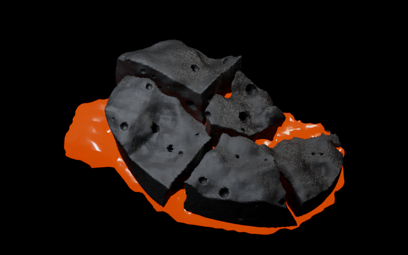
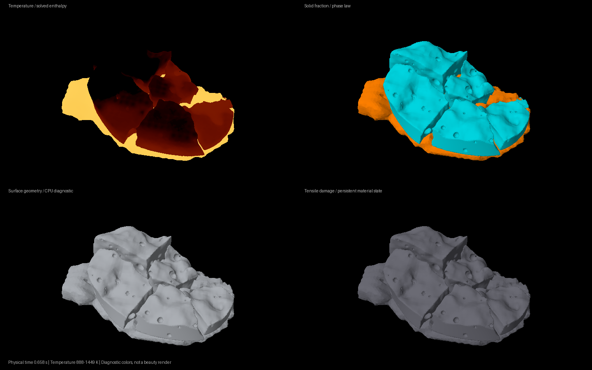

This slab image is rejected. The replacement also remains below the target. View the current CPU repair check.
Rejected slab study.
The floor no longer pins hovering basalt. Incoming melt now loads separate solid pieces, with heat and mass tracked through the simulation.

0.658 s simulated · 1,896 material points · Mitsuba CPU · 800 × 500This study starts with fractured, porous basalt already present. Its movement is simulated; the initial cracks and pores are specified geometry. It is not the complete magma-to-basalt simulation or a finished production shot.
Saved simulation states
Scrub the actual cached states. These are diagnostic images, with temperature, phase, geometry and damage shown separately.

Method, checks, and remaining limitations
25 component checks pass; 1 check remains failed. Passing component tests do not establish production realism or grid convergence.
- Initial fractures and pores are specified; their formation is not simulated
- This is a short coarse study, not the complete lava/gas/bed simulation
- The last early-flow grid refinement result still fails its 15% gate
- Embedded clast boundaries use fitted affine motion; reported error does not establish continuum convergence
- Melt surface detail, fracture-face detail and solid contact/friction still need improvement
- Pore bump is an optical approximation; melt/solid kernels may overlap at unresolved interfaces
| bed exchange | pass |
| contact | pass |
| coupled cooling | pass |
| crystal network | pass |
| enthalpy | pass |
| fracture | pass |
| fracture topology | pass |
| fragment contact | pass |
| gas displacement | pass |
| gas fracture dust | pass |
| gas heat plume | pass |
| gas still air | pass |
| gas thermal exchange | pass |
| gravity | pass |
| implicit fragment contact | pass |
| inlet source | pass |
| insulated heat | pass |
| liquid memory | pass |
| local fracture | pass |
| material grid refinement | fail |
| melting reset | pass |
| shear decay | pass |
| solid collision scene | pass |
| solid floor contact | pass |
| stefan | pass |
| transfers | pass |